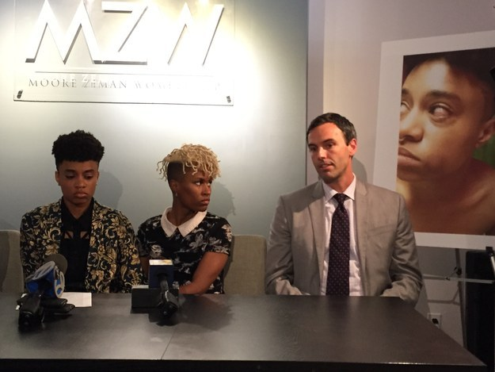

Zeman & Womble's partners have been featured in local, national and international media, including the New York Times, CNN, Huffington Post, and BuzzFeed.
New York Daily News Coverage
MTA bus driver’s career skids out after sexual harassment claims from co-workers.
A macho MTA bus driver is in legal hot water because he likes to pick up women on the job, literally.
Read the full New York Daily News article
A cellphone thief who starred in a video as a human punching bag for NYPD cops and the guy whose phone was stolen is fighting back with a federal lawsuit.
Read the full New York Daily News article
Business Insider India Coverage
An 'unbelievably stupid' New York law about knives could be changed very soon.
A little-known law against "gravity knives," a broadly defined weapon that law enforcement has erroneously been applying to folding knives, could soon be amended by the New York state government, ending more than 50 years of arrests and prosecutions for people carrying knives routinely sold in hardware stores.
Read the full Business Insider India article
Mimesis Law Coverage
Ken Womble, fighting the good fight.
Ed. Note: Scott Greenfield crosses Ken Womble, who went from public defender to start his own small firm, Zeman & Womble, in the trenches of Brooklyn, USA.
Read the full Mimesis Law article
NYPD Officer Under Investigation, Accused Of Calling Woman A 'F**king Dyke' Before Assaulting Her
On July 11, Stephanie Dorceant was on her way home with her girlfriend when she encountered an off-duty police officer who she says called her a "dyke" and, after she responded, attacked her. She was held by police for nearly three days.
Zeman & Womble is representing Dorceant.
ABC News Coverage
District Attorneys simply believe the word of police officers, said Moore. There is a thin blue line.
BuzzFeed Coverage

Dorceant's lawyer Benjamin Moore told BuzzFeed News that he is "pretty confident that we will clear Stephanie's name."
"We're at a tipping point here with the NYPD in this city," Womble told the all...But all we really need is cops to stop being bullies."
Huffington Post Coverage
When Allman saw Aquino throw her girlfriend's head to the ground she thought Dorceant was "going to die," Allman said. Both women are small and would have posed no threat to the officer, said Dorceant's lawyer, Benjamin Zeman.
Read the full Huffington Post article
Gothamist Coverage
Noting that tomorrow is the first anniversary of Eric Garner's unpunished death, Dorceant's attorney Ken Womble said he has no faith in the NYPD to police itself. His colleague Ben Moore declared that Dorceant will prevail.
"We are confident that these charges will be dismissed against Stephanie and confident also that this officer, this renegade officer will be prosecuted," Moore said.